π是个非常特殊的数，你可能知道它不仅仅是个希腊字母。这个数需要用符号表示，因为没法把它全写出来，它无穷无尽。π的故事从古流传至今。
符号π 就是希腊字母里的p，读作“派”。它从18世纪就开始使用了，但它的历史还要更为久远。
圆的大小
通常而言，π就是3.14，但这是个近似值。π不是个简单的数，但是来自一个非常简单的问题：如果已知圆的直径，那么它的周长是多少？车匠对这个问题很感兴趣，因为他们要造同样大小的车轮。铜匠也是，他们要做指定尺寸的圆筒。
圆的术语
圆是一种独特的形状：唯一一种只有一条边的形状。圆上的任意一点到圆心的距离都是相等的，这个距离称为半径。圆的宽度，就是从圆上的一点穿越圆心到圆上另一点的距离称为直径。直径等于半径的两倍。还有一个刻画圆的术语——圆周长。周长的意思就是一周的长度，可以用于任何形状。尽管有时用周长来描述围绕圆转一圈的距离，但术语“圆周长”只用来刻画圆形，更为常见。
比较长度
回到车轮的问题，π来自简单的计算π=C/d，或者说周长（C）除以直径（d）。这点数理知识告诉我们圆周长是直径的多少倍。无论这个圆多大，这个关系始终不变。无论你量硬币（圆形）也好，量赤道（圆形）也好，π是不变的。另一种理解π的思路是圆周长与直径的比（见第44页）。这个比是圆形的基础要素，所以π也可以用来由d计算C：C=πd。
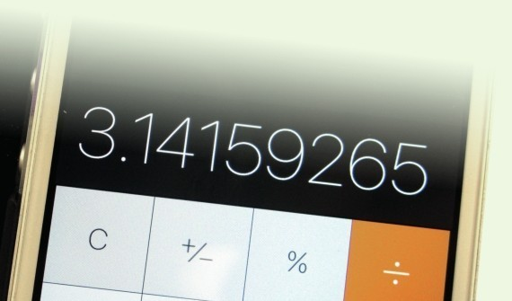
如今我们可以在计算器上一键获取π的值。可是，是谁算出了它呢？
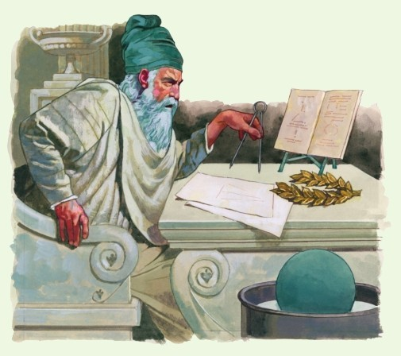
阿基米德，π的理论之大成者，正在使用圆规工作。
测量问题
寻找C/d的答案，π的情况比较复杂。测量直径挺容易。古代数学家画圆用一副圆规，很像今天数学课上用的圆规。一点确定圆心，另一足旋转成圆周。圆规两足之间的距离就是半径（直径的一半），因此，数学中常用半径（r）来计算圆的一些参数。也就是说， π=C/(2r)。精确测量圆周的技巧源自实际应用。一种技巧是推轮子转一圈看看它跑了多远，然后可以把这个长度与直径比较。它达到了直径的3倍还多一点，所以π比3还多一点。
弧度
测量圆的一种方法是把圆分成360份，每份1°。另有一种基于半径测量角度的度量称为弧度，其中蕴含了π。圆的周长的一部分称为弧。比如，一个半圆就是半个圆周长的弧，这个弧对应的角是180°，而它的弧度（rad）是π。解释是这样的：1弧度就是1条半径那么长的弧对应的角，用角度表示大约为57.3°。但是这两套系统并不一起使用。一个圆的整圆周长是2π乘以r，所以一个圆的弧度是2π。一个半圆的长度就是它的一半：π乘以r。因此，一个半圆的弧度就是π。弧度制在割圆中是更简便的方法，在更复杂的数学领域中应用十分便利。
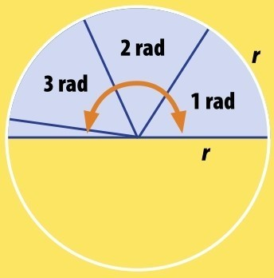
3.141 592 653 5... 弧度
=π弧度
=180°
渐进真相
巴比伦和古埃及等古代文明中的数学家与工程师知晓π，但只能估计它的值。巴比伦人选择
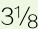
表示π，在现代的十进制中就是3.125。公元前1500年，古埃及数学家阿梅斯选择8/9的两倍的平方表示π，也就是（16/9）2，即3.1605。精确的π
如今，我们知道古埃及人和巴比伦人所用的数值都不够准确。前者的数值比π大点儿，后者的比π小点儿，两者的偏离数值还差不多。这都是由误差造成的，他们想找个简单的数来解决问题。考虑到古代的技术水平，从实用的观点来看，这两个值就挺好的啦。
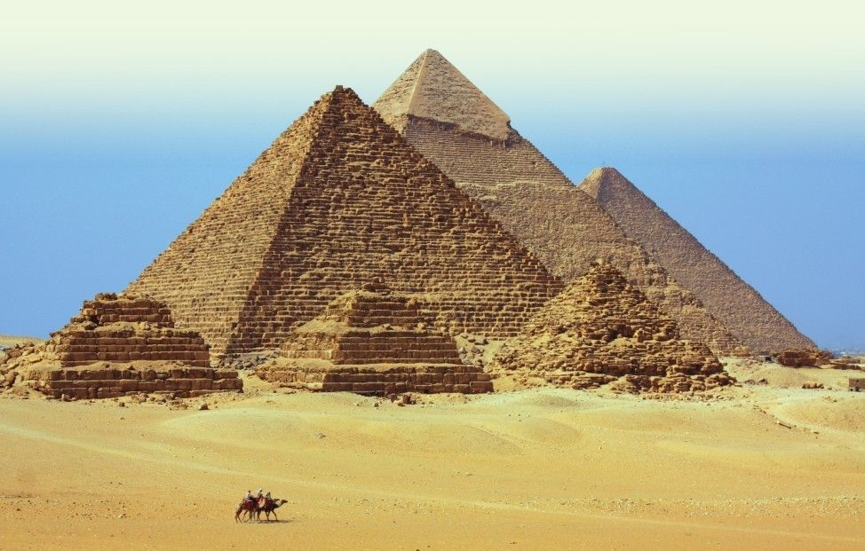
吉萨金字塔的周长略大于其高度的2π倍。
金字塔与π
吉萨的大金字塔的维度与π息息相关。每座金字塔的正方形底座的周长是其高度的2π倍，这跟圆周长与半径的比一致。谁也无法断定这些巨大纪念碑的建筑师为何又如何如此这般，因为建筑方案俱已湮灭。不过有一个线索：他们在设计伊始，用圆规画了个圆圈，并用π计算圆周长，然后他们为这些金字塔设计了同周长的正方形底座。建筑师在底座上设计合适的角度隆起一个半圆来确定高度，半圆的最高点就是金字塔的尖峰。因为半圆和底座的半径相同，最终金字塔的高度与周长就遵从了设计中半径与圆周长的比例。
更为精确
此后的工程师需要更精确的π，这也是古希腊工程师阿基米德对π孜孜以求的缘故。现代工程师需要更精确的π来制造更精确的圆形物体，以及尺寸精确的球面、圆柱和圆锥。π的数字无穷无尽，但我们也不求全盘皆知。事实上，前39位足矣，即3.14之后的36位。这就足以测量包含宇宙那么大的圆了。尺寸可能略有误差，偏小或偏大，但是，用39位的π，意味着这点误差不过像一个氢原子的原子核那么大。宇宙，世上最大；氢原子的原子核，世上最小的物体之一。所以说精确测量世上之实物，39位的π是很好的工具。
发明家阿基米德
阿基米德既精确地逼近了π，也有许多其他功绩赫赫有名。举世皆知，他沐浴时发现了与物体浮沉相关的定律。他还为西西里岛的叙拉古城邦设计了武器，防御随时都会入侵的罗马人。他用镜子反射阳光烧毁战船，再用杠杆将其一举击沉。阿基米德熟知杠杆原理，他曾说过：“给我一个长杠杆和放置它的支点，我可以撬动地球。”
阿基米德用杠杆撬动地球——真的可能哦！
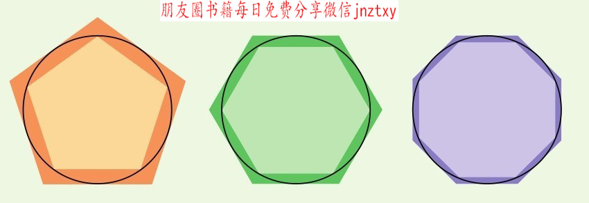
圆周长在内接多边形与外切多边形的周长之间。
数学超级巨星
对于工程而言，计算精确的π大有意义。自古以来的数学家对数字π别有兴味。π是个数学常数，是数学家在研究自然事物中发现的。其他常数还包括黄金比例Ф（见第44页）和数e（见第138页）。π是在研究圆时发现的，但也在数学的其他领域和物理学中出现，用来刻画空间与时间的联系及亚原子粒子的行为。
阿基米德常数
π也作为阿基米德常数为人所知。这位古希腊天才在公元前3世纪就首次精确计算出了它。如同大部分古希腊数学家那样，阿基米德是用几何学的方法，用规则多边形来逼近π。多边形就是有3条或3条以上边的形状，规则多边形的所有边长度相等（所有角也大小相等）。最简单的规则多边形有等边三角形、正方形、正五边形等。计算规则多边形的周长很容易。阿基米德不断增加多边形的边数，使得它越来越趋近圆形。正八边形比正四边形要圆，正十边形就更圆了。（你可以想象圆就是有无数条边的多边形。）
内与外
阿基米德知道可以在圆内部画任意多边形，所有的端点都落在圆周上。但是，这个多边形的周长永远比圆周长要短。他还知道可以把圆画在任意多边形内部，所有的边都与圆周相切。但是，这个多边形的周长永远比圆周长要长。故而，下一步，他在圆内和圆外都画上同样的多边形，他知道圆周长在这两个多边形的周长之间。既然已知半径，他就用这两个周长计算π的上界和下界。多边形的边越多，两个周长的差距越小，这意味着π的上界和下界越精确。
笔与纸
如今，我们可以用计算机生成任意多边形和圆，但是阿基米德那个时代可没有这个机器。他没有画出来，但是想象了一个圆的内接和外切九十六边形，然后用一系列计算算出了这两个周长，由此得到π介乎3.1408与3.1429之间。世纪流转，数学家以更复杂的图形改进这一结果。17世纪，发展出了一种用无穷序列计算π的方法。一些数学家历时数年计算出更精确的结果。计算机加速了这一进程，得到了π的前13.3万亿（1.33×1013）位数。但是，后面还有很多很多！
π的公式
圆周长：C=2πr=πd，r是半径，d是直径
圆的面积：A=πr2
球的体积：V=（4/3)πr3
球的表面积：A=4πr2
圆锥的体积：V=πr2h/3，h是圆锥的高
圆柱的体积：V=πr2h
圆柱的表面积：A=2πrh+2πr2
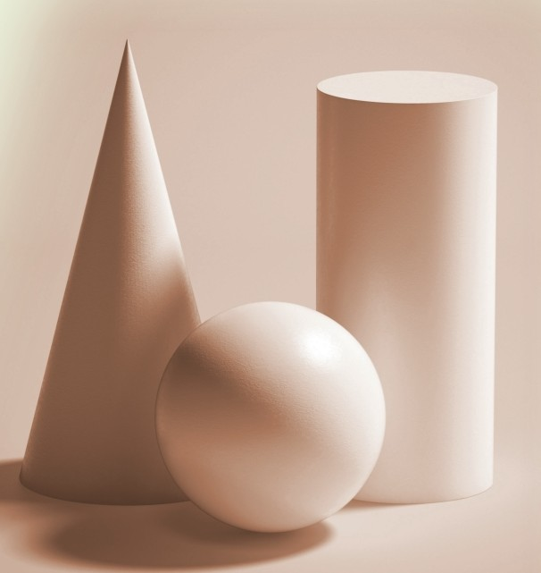
π可以用于计算圆的面积和其他具有圆的形状（例如圆锥、球和圆柱）的面积与体积。
圆锥截面
圆形是圆锥的一种截面。如果切开圆锥，一共可得到4种形状。平行于底面切，得到的就是圆形。沿一定角度切，圆拉伸了，得到的就是椭圆。再增大角度，平行于斜边切，就产生抛物线。抛物线的大小各异，但形状相同。最后，沿竖直的角度切，就得到双曲线，双曲线的形状各不相同。
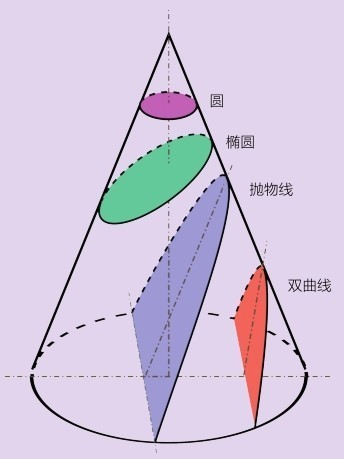
助记忆
记忆高手可以记住圆周率π的大量数字，大多数人不过记得3.14罢了。但是，这首有关圆周率的诗——或许我们可以称之为“圆周诗”——可以帮我们记住更多：“How I want a drink, sparkling of course, after the heavy lectures involving quantum mechanics!”（酒味甜，干！量子力学，难！课业压双肩。安得金樽琼液泛微澜……）数数每个单词的字母，我们就得到了π的前15位数：3.141 592 653 589 79。(译者注：此诗用于数字母，故保留原文。中文圆周率的诗可参考“山巅一寺一壶酒……”——关于圆周率的谐音顺口溜。)
参见：
▶超越数，第148页
原理
我们来看看π在计算具有圆的形状的物体的面积和体积时的应用。参考第73页的公式。
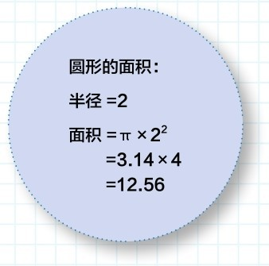
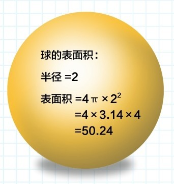
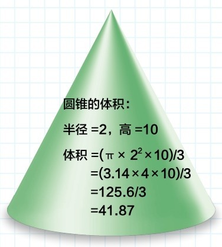
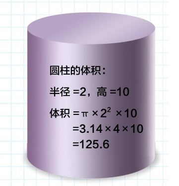